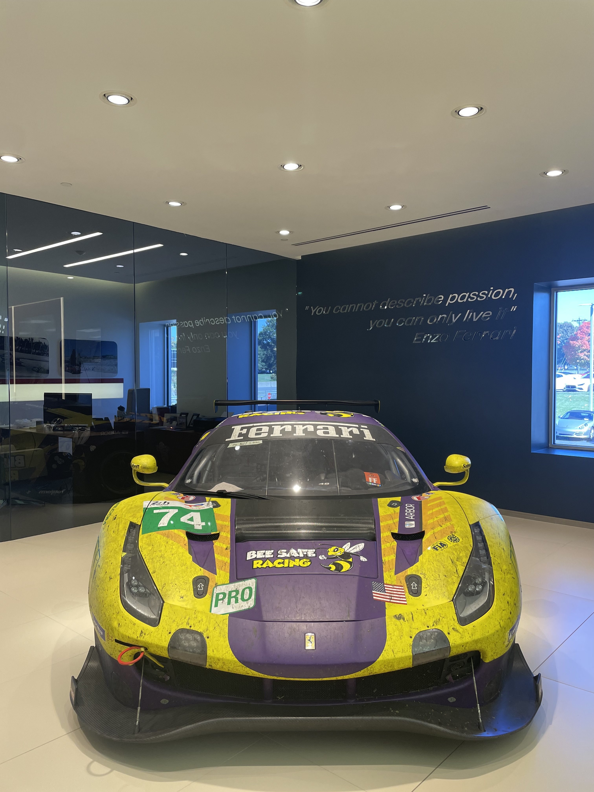
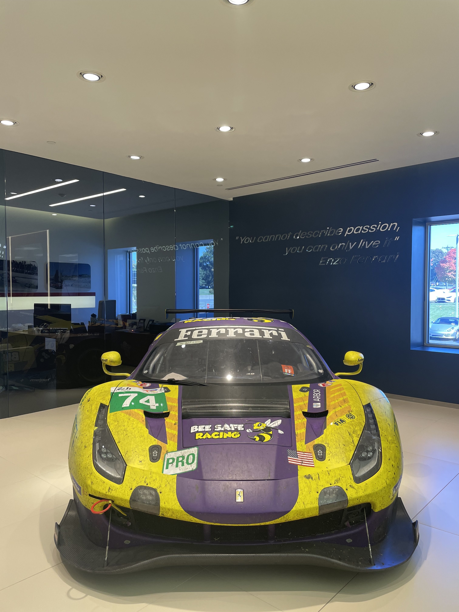
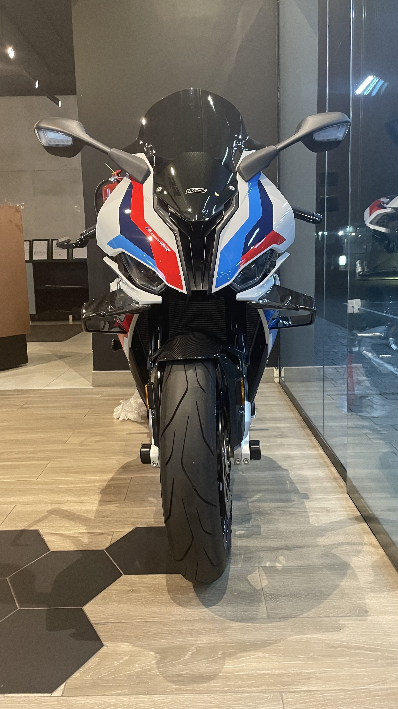
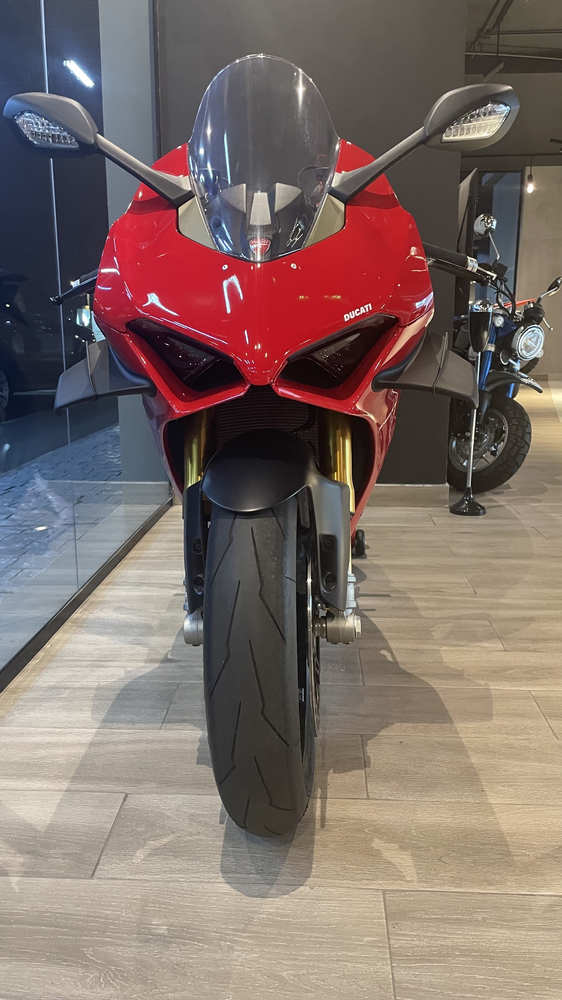
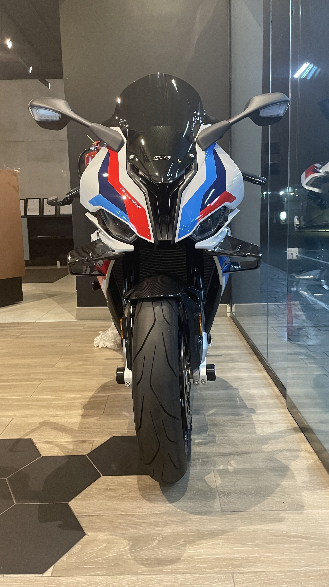
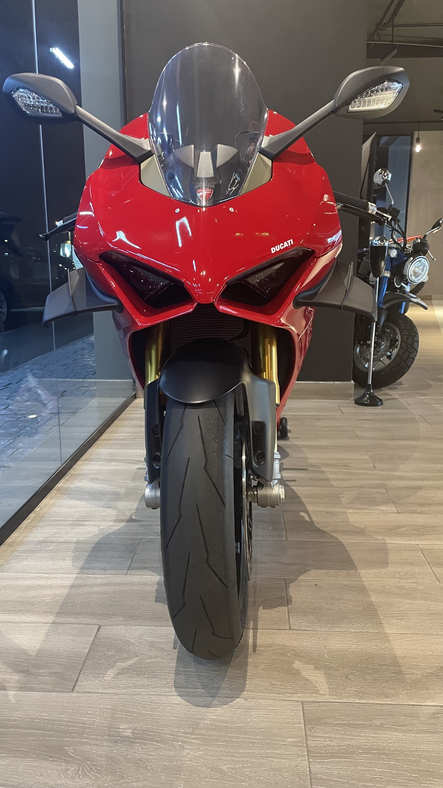

Welcome to the Culture
Whether you're a gearhead or just starting out, this site will put you on game. Learn the basics, explore mods, and understand real car knowledge.
Start LearningHow Cars Work
Cars run on internal combustion engines that convert fuel into power. Key things to understand: horsepower (how fast), torque (how strong), and drivetrain types like FWD, RWD, and AWD.
Key Components in a Car
- Engine: The heart of the car that powers it using fuel and air to generate power. It’s what makes the car go.
- Transmission: Responsible for sending power from the engine to the wheels, allowing the car to change speeds and shift gears smoothly.
- Brakes: A critical safety component, they use friction to slow or stop the car. Types include disc and drum brakes, each with their own system for operation.
- Suspension: Keeps the car's wheels in contact with the road. It helps absorb shocks and bumps, ensuring a smooth ride while handling the car’s weight and stability.
- Battery: Provides electrical power to start the car and run components like lights, air conditioning, and infotainment.
- Power Steering: Assists with steering, making it easier to turn the wheels, especially at low speeds or when parking.
- Tires: Provide grip and traction on the road. Different types of tires affect handling, comfort, and performance in various conditions.
Performance Car Mods
Modding a car is all about making it truly yours. From performance upgrades to sound and style, mods unlock the full potential of your ride and make driving more exciting.
- Cold Air Intake: Brings in cooler air to improve engine breathing, boost throttle response, and add power.
- Exhaust System: Enhances airflow and gives the car a louder, deeper sound while improving performance.
- Turbocharger: Forces more air into the engine to dramatically increase horsepower.
- ECU Tuning: Adjusts engine settings like fuel and timing to squeeze out more power and responsiveness.
- Suspension Upgrades: Improves handling with better control, reduced body roll, and a lower stance.
- Performance Tires: Provide more grip, faster acceleration, and better cornering.
Why Mods Matter
Car mods transform a stock machine into something unique. Whether it’s more horsepower, tighter handling, or a louder exhaust note, the right setup makes every drive feel like an experience. It’s not just about speed—it’s about the connection between driver and machine.
How to Buy Your First Car
Buying your first car can be an exciting but overwhelming experience. Here are some tips to help guide you through the process:
1. Set a Budget
Before you start looking at cars, determine how much you're willing to spend. Consider not only the car’s price but also insurance, maintenance, and fuel costs.
2. Do Your Research
Learn about different car models, their reliability, and their market value. Websites like Kelley Blue Book and Edmunds can provide you with valuable insights.
3. Inspect the Car
Always inspect a used car thoroughly. Check the exterior and interior for any damage, and ask about the vehicle’s history (accidents, repairs, etc.). If you’re unsure, take the car to a trusted mechanic.
4. Run a Vehicle History Report
Using the car's VIN (Vehicle Identification Number), you can run a report through services like Carfax or AutoCheck to check for accidents, ownership history, and more.
5. Test Drive
Never buy a car without taking it for a test drive. Pay attention to how it drives, brakes, and handles. Listen for any unusual sounds.
6. Negotiate the Price
Don’t settle for the asking price. Research the fair value of the car and negotiate a price that works for you. Be prepared to walk away if the deal doesn’t feel right.
7. Check the Paperwork
Make sure all the necessary paperwork is in order before purchasing. This includes the title, registration, and any repair or service records available.
8. Avoid Rushing
Take your time with the process. Don’t feel pressured to make a purchase until you’re sure it’s the right car for you.
Car Gallery
Check out some of the coolest cars we've come across!
 

 


